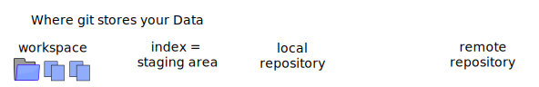
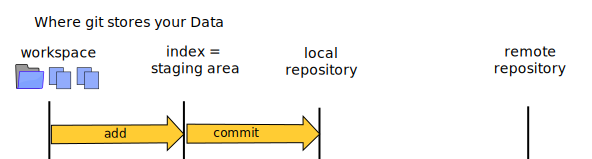
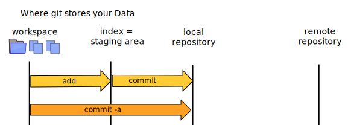
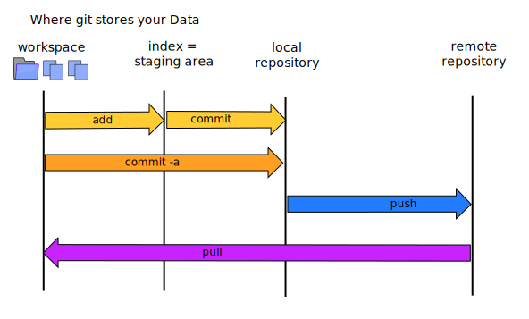

Git Basics
This Guide will give you a very quick introduction to git.
After reading this guide, you will know:
- Why you should a version control system like git
- How to use git as a single developer, in a "one person team"
1 What is a Revision Control System?
Revision control (an aspect of software configuration management), is the management of changes to documents, computer programs, large web sites, and other collections of information. Wikipedia
In other words: it's a tool that helps you with your code files, and with several version of such files.
These systems are known under many names
- version control system (VCS)
- source code manager (SCM)
- revision control system (RCS)
In german they are most commonly called "Versionskontrollsystem".
1.1 A short history of revision control
When we look at open source revision control systems we find some ancient systems that are no longer in use:
- RCS
- CVS
and several systems that are still in use today:
- SVN, also called Subversion
- Hg, also called Mercurial
- Git
SVN uses a central server. If you cannot reach this server for a longer time (e.g. because you are travelling and offline) then you cannot use the system.
Both Mercurial and Git are distributed systems, they do not need a central server. You can use the full system on your own machine while offline.
1.2 Why use revision control?
There are good reasons to use revision control even in small projects:
- The whole history of the project always accessible, you can "go back in time" to old versions of your code.
- You can try out experimental stuff without danger of breaking your existing code.
And it's absolutely vital for teamwork - several people can develop on separate machines. The system helps with merging the differet programs into one.
1.3 Why use git?
photo cc
Git was invented by Linus Torvalds, to manage the source of the linux kernel and it's many contributors. See this video of a talk by him.
Git is a distributed vcs - it does not depend on one central repository, every repository is created equal. You can transfer code in "both directions". You can work online and offline. Its architecture is not fixed: if one server breaks down, you can move to a new server without any trouble.
Branching and merging is easy in git.
In your local working copy you also have a fully fledged repository:
it's stored in one directory: .git.
All the code you check in is identified by SHA1. You cannot change the content of a commit after it has been made without the hash breaking!
1.4 gitlab and github.com
Gitlab is an open source project that adds a web frontend to git repositories. It is often used in companies and universities to host git repositories internally. (At Salzburg University of Applied Science we use it at git.mediacube.at.
Github.com is a commercial hoster for git repositories. They also offer a web interface and add a lot of convenient features to git. It's free for open source projects and used by many such projects. You can also host your code for free if you opensource it (even if noone else ever uses it).
Githubs mascot is the octocat:

2 Git Basics
Where is my code? There are four answers to this question, four "places" that you need to learn about:

- the workspace is what you see in your computers file system
- the index is an invisible space where you can add files you want to commit (see what's the deal with the git index)
- you can always commit to your local repository - it's really stored in the
.gitfolder - a remote repository can be on another computer. it may not be reachable all the time
2.1 Configuring Git
Before you start working with git you should configure your name and e-mail address. This information will be added to all commits you make. (So if you want to work anonymously get a new e-mail address for this)
- use the command "git config"
- for a specific repository the information is stored in .git/config
- for a user is stored in ~/.gitconfig
- use "git config --global" to change your user config
This is how you save the information:
$ git config --global user.name "Firstname Lastname" $ git config --global user.email "me@fh-salzburg.ac.at" $ git config --list --global # user.name=Firstname Lastname # user.email=me@fh-salzburg.ac.at
2.2 Create a Repository from scratch
When you start a new project and have no data yet you can start like this:
mkdir project_directory cd project_directory git init # creates subdirectory .git # repository is stored in there # .git/config
If you are working on windows but collaborating with developers on other systems you might want to configure which line endings and which external editor is used. change the following setting:
core.autocrlf false core.editor "C:/Programme/Notepad++/Notepad++.exe"
2.3 Plain git Workflow
The "innermost loop" of working with git is the "commit": a change in one or severl files that belong together. This is how you create a commit:
# what's up? git status # i've created or edited a file git add FILE # i've created and/or edited a lot of files git add . git commit -m "describe the commit"
The "add" command puts your changes into the staging area, the "commit" commands saves them to the local repository.
The staging area is the place where you collect the pieces that will make up a commit.

Workspace ("working copy") is managed by git!
2.4 Git adds content, not just filenames
A word of warning: The "add" command puts the content of the added file into the staging area, not just the filename.
Try out the following sequence with a file of your own:
# change FILE git add FILE # change FILE again git status # you will find the FILE mentioned both under # "Changes to be committed" and under "Changes not staged for commit" git diff # between the staged version and the current version git diff --staged # between the staged version and the last commit
You will find that the first change has been staged, but the second one has not. Therefore: only add your files when you are sure you are done.
2.5 Deleting a file from git
If you want to delete a file from the repository you should use the command
git rm FILE
This removes the FILE from the file system and at the same time addes the information to the staging area. so on the next commit the deletion will be entered into the repository.
If you just delete the file from the file system
the process get's a bit more inconvenient. git status will
show you
rm README git status # On branch master # Changes not staged for commit: # (use "git add/rm <file>..." to update what will be committed) # # deleted: README git rm README
On the last line there you have to type in the filename again. And you won't have any help from your shell (like autocompletion) because the file is not there any more.
After the commit the file will no longer show up when we use the repository. But the information is still there! You can still go back to the previous commit and thus "resurrect" the file.
2.7 What is a good commit?
When implementing a feature or fixing a bug you will usually need several commits to get the work done. Or maybe it's the other way round: when you work with git you will soon find that making several small commits is quite convenient, because it helps you structure (and maybe undo) your work. Even if you made several changes, you can split those up into two commits by first adding and commiting one set of files, and then adding and commiting the rest.
If - on the other hand - you do not want to add the files by hand
there is a convenient way to commiting all the changes at once: add
the -a flag to the commit:
git commit -a -m 'some stuff i did'

3 Remote Repositories
You can work with several remote repositories. The most
important remote repository is usually called origin.
3.1 Adding a Remote Repository
If you created the repository locally you can connect it to a remote repository later on:
git add remote origin https://github.com/myname/myrepository.git
Look into .git/config to find the information again.
3.2 Clone an existing repository
When you want to work with an existing remote repository you need to find out the repositories URL. The URLs may start with http, https, ssh, or git. Two examples are:
https://github.com/web-engineering/web-engineering-textbookgit@github.com:web-engineering/web-engineering-textbook
To get the data for the first time use the clone command:
git clone REPOSITORY_URL git clone REPOSITORY_URL DIR_NAME
If you do not specify a directory name, the last part of the URL will be used. The clone command will implicitly set the origin to the repository url, you don't need to type:
git remote add origin REPOSITORY_URL
3.3 workflow with remote
When working with a remote repositories you need two now
commands: push and pull.

When you push your local commits to the remote repository
you have to specify a local branch and the name of the remote repository.
When you haven't worked with branches yet there is only the master branch.
git push origin master
When you pull changes from the remote repository you havt
to specify the local branch again (probably master) and
the name of the remote repository.
git pull origin master
Now you are ready to work with git on your own. You can make a backup or publish to the world by pushing to a remote repository.
But if you want to work in a team you will need to handle branches.
3.4 Resources
- try git
- https://git-scm.com/documentation
- https://git-scm.com/book/en/v2
- https://help.github.com/
- Loelinger(2009): Version Control with Git. O'Reilly Media.
- Swicegood(2009): Pragmatic Version Control Using Git. Pragmatic Bookshelf.